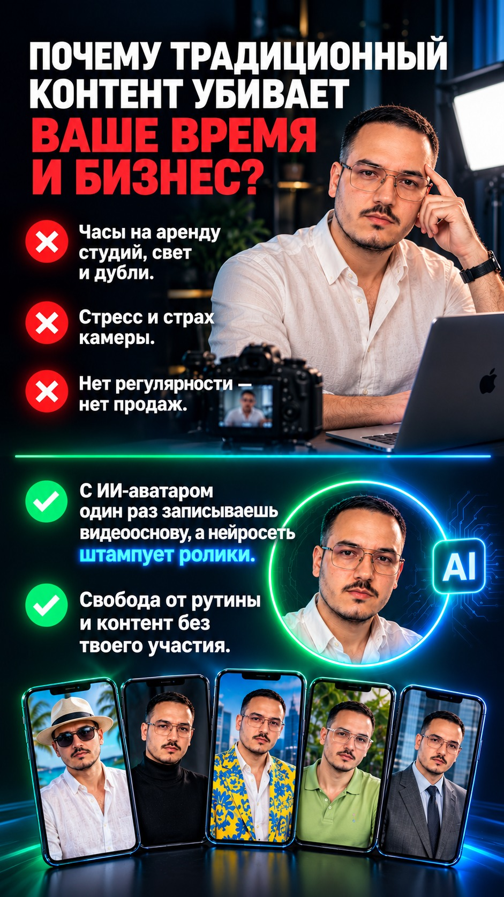
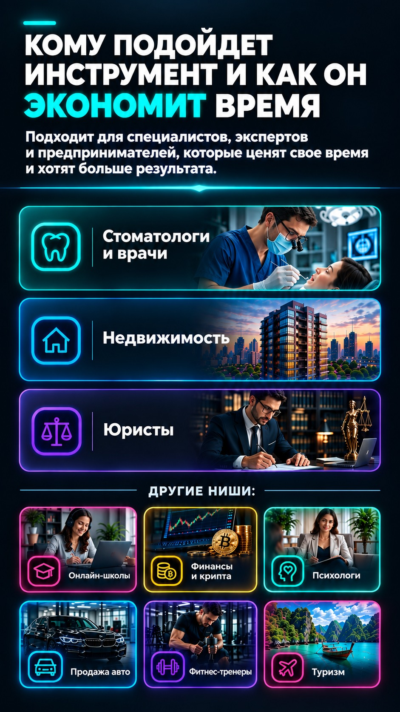

Захвати внимание рынка с помощью ИИ-аватара
Больше клиентов, рост личного бренда и полная свобода от съёмок.
- Контент 24/7
- Новые клиенты
- Рост бренда
Пошаговый гайд: как создать своего цифрового двойника, который работает на тебя 24/7.
Забрать гайд за 1 000 ₽ →

Никаких рисков
Почему это безопасно
Прежде чем оплатить — вот что вы получаете на самом деле.
🎥
Без студии и техникиОдин раз снимаешь видеооснову на телефон — дальше всё делает нейросеть.
🧩
Подходит новичкамГайд написан пошагово — разбираться в нейросетях заранее не нужно.
⚡
Мгновенный доступМатериалы открываются сразу после оплаты, без ожидания.
♾️
Доступ навсегдаГайд остаётся с вами — не пропадает через месяц или год.
Начни сегодня
Не откладывай свой аватар на потом
Пошаговый гайд по созданию цифрового двойника — с доступом уже через минуту после оплаты.
1 000 ₽
Забрать гайд →
Мгновенный доступ · Доступ остаётся навсегда